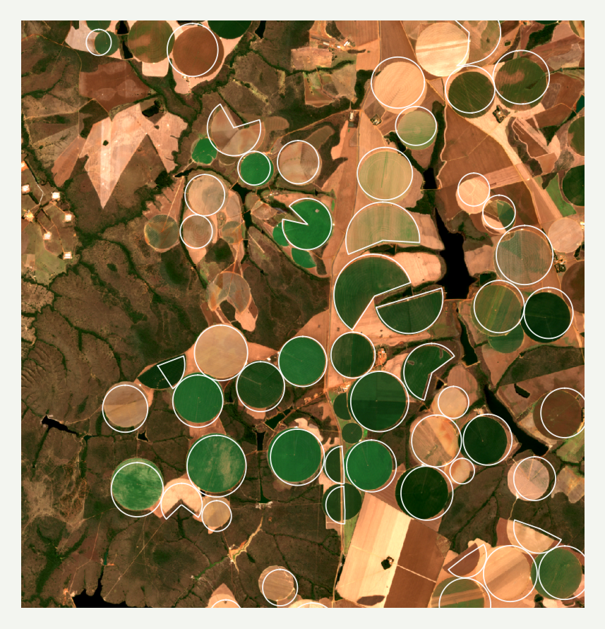
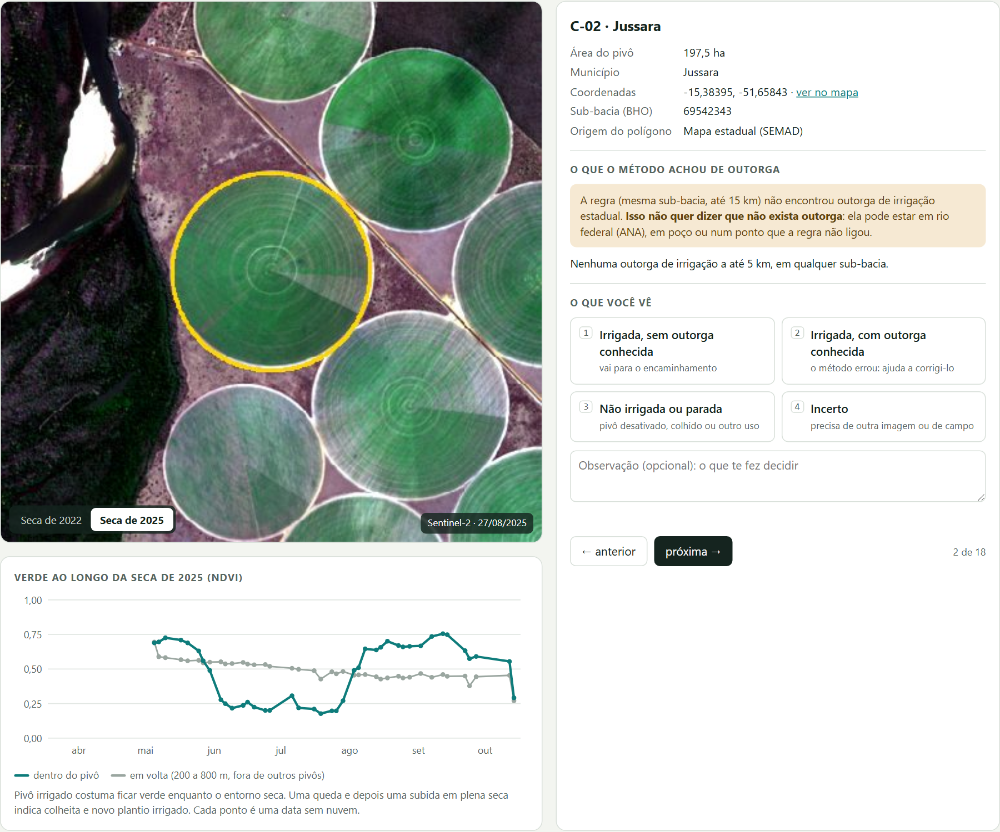

Um teste exploratório com IA · outubro de 2026
Como dados públicos, imagens de satélite e IA generativa podem ajudar a encontrar áreas irrigadas sem autorização de uso da água em Goiás. E o que ainda falta para isso virar ferramenta de trabalho.

O ponto de partida
Um servidor da área de recursos hídricos da SEMAD-GO pediu ajuda para começar um projeto: usar inteligência artificial e sensoriamento remoto para identificar áreas irrigadas que não têm outorga. Hoje esse trabalho é feito à mão, olhando imagens de satélite, e só quando surge uma demanda.
“A ideia aqui seria automatizar essa análise e rodá-la em períodos estratégicos como por exemplo a época de seca no estado de Goiás.”
Para preparar o encontro, foi feito um teste com IAs generativas e dados públicos. Depois do encontro, a conversa virou um desenho para o problema todo e um protótipo.
O problema tem três partes
Achar as áreas irrigadas nas imagens. Hoje é manual e sob demanda: é o gargalo.
Ver se cada área tem outorga. A base de pivôs e a de outorgas não têm um código que as ligue.
Gerar um relatório padronizado que sirva ao processo, sem concluir irregularidade antes da hora.
A ideia
O desenho que saiu da conversa divide o trabalho: a máquina faz a parte repetitiva (procurar, cruzar, juntar imagens) e a pessoa faz só a parte que exige julgamento, olhando um caso de cada vez. O que ela marca vira um relatório pronto.
Para treinar um programa que reconheça pivô irrigado, é preciso de casos já conferidos, que quase não existem. Cada marcação na triagem é um desses exemplos.
Um detector que decide sozinho precisa acertar quase sempre. Um que só monta uma fila para alguém olhar pode errar bastante, se a fila couber no tempo de quem revisa.
Mesmo sem detector, a fila feita a partir do mapa de pivôs que já existe produz um resultado útil. É o princípio do DETER, do INPE: alerta, verificação humana, laudo.
O protótipo
Para cada pivô da fila, a página mostra a imagem da seca de 2022 e da de 2025, um gráfico de quanto o pivô ficou verde ao longo da seca, e as outorgas de irrigação próximas. A pessoa marca uma de quatro respostas:
Na aba Relatório, as marcações viram uma tabela e um texto prontos para baixar. O relatório nunca conclui irregularidade: registra o que foi visto e o que o cruzamento encontrou.
A página funciona sem instalar nada, inclusive sem internet, e não envia dados a lugar nenhum. Os 18 casos são pivôs reais do mapa público em que uma regra simples não achou outorga por perto.

O que o teste mostrou
pivôs já mapeados pela SEMAD (imagens de 2020 a 2023), em dados públicos
outorgas de irrigação, cada uma com o ponto de captação; só 10% têm a área irrigada preenchida
separação entre pivô e entorno numa data de agosto × ao longo da seca (teste preliminar)
pivôs novos entre o mapa de 2016 e o de 2023: o mapa precisa de atualização contínua
Documentação completa, com os números e como cada um foi obtido →
Como foi feito
O tema do encontro era o uso de IA generativa no trabalho, e o próprio teste é um exemplo. Várias IAs (MiniMax, DeepSeek e Claude) escreveram e rodaram o código, e uma conferia a outra. A cada passo, alguém perguntava: o que este número está medindo?
Foi assim que apareceram os ajustes: pivôs que estavam em Minas Gerais, camadas contadas duas vezes, uma regra que media a posição no rio em vez da documentação, e uma correção das imagens Sentinel-2 que mudava o resultado.
Em poucas horas, a IA chegou longe. Cada ajuste veio de alguém conferindo o dado.
Com o conhecimento de quem trabalha com esses dados e mais tempo, o resultado tende a ser bem melhor do que este primeiro teste.
Possíveis próximos passos
| Fase | O que é |
|---|---|
| 1 · Triagem | Usar o protótipo numa bacia crítica, com algumas dezenas de casos, e ver se o relatório serve ao trabalho. |
| 2 · Ligação | Descobrir nos sistemas internos um código que ligue pivô e outorga (polígono da área irrigada, CAR ou processo). |
| 3 · Piloto | Fila periódica num servidor da SEMAD, com login e histórico. |
| 4 · Detector | Série de imagens e um classificador treinado com os casos marcados. Pode virar tema de pesquisa. |
Cuidados: não é lista de infratores; verde não prova irrigação; “sem outorga localizada” não é “sem outorga”; dados pessoais da camada de outorgas ficam fora de qualquer IA na nuvem.